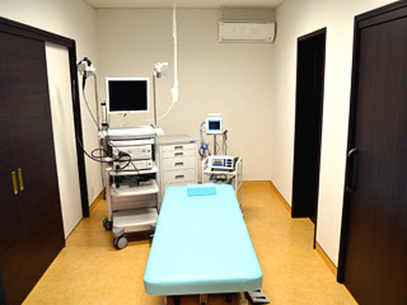
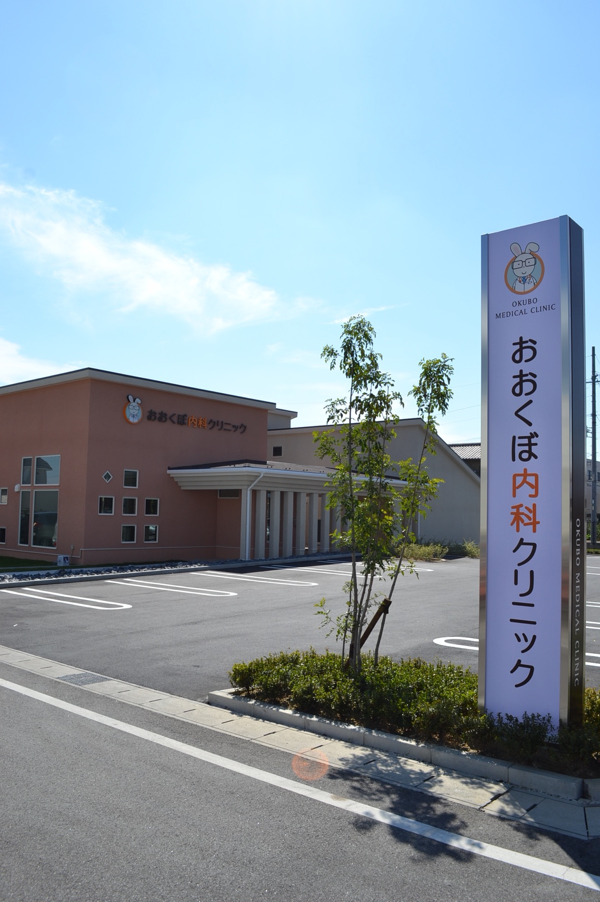

| 診療時間 | 月 | 火 | 水 | 木 | 金 | 土 | 日 |
|---|---|---|---|---|---|---|---|
| 9:00～12:00 | ○ | ○ | ○ | ○ | ○ | ○ | ／ |
| 16:00～19:00 | ○ | ○ | ／ | ○ | ○ | ／ | ／ |
休診日：水曜午後・土曜午後・日曜祝日

浄水駅徒歩約2分
駐車場29台
診療科内科・消化器内科
Topics
受診前にご確認ください
Hours
初診・再診で受付終了時間が異なります
| 診療時間 | 月 | 火 | 水 | 木 | 金 | 土 | 日 |
|---|---|---|---|---|---|---|---|
| 9:00～12:00 | ○ | ○ | ○ | ○ | ○ | ○ | ／ |
| 16:00～19:00 | ○ | ○ | ／ | ○ | ○ | ／ | ／ |
休診日：水曜午後・土曜午後・日曜祝日
First visit
予約制ではありません
発熱や強い咳など急性期の症状がある方は、来院前にお電話ください。
マイナンバーカードまたは健康保険証、お薬手帳、各種医療証をお持ちください。
症状が始まった時期、気になること、服用中のお薬などを確認します。
1週間以内に発熱、せき、咽頭痛、頭痛、息苦しさ、倦怠感がある方の診療を行っています。受診希望の方は窓口までお越しください。
ご不明な点は 0565-43-0600Medical services
内科・消化器内科を中心に診療します

Endoscopy
検査前の説明から検査後の画像説明まで、安心して受けていただけるよう丁寧に対応します。
鼻から細いスコープを挿入するため、嘔吐反射が起こりにくく、負担を抑えられる場合があります。

受診について迷われたときは、お電話でお問い合わせください。
電話0565-43-0600